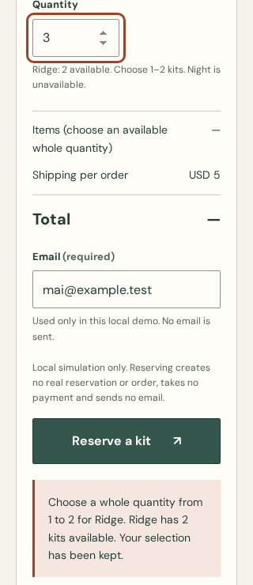
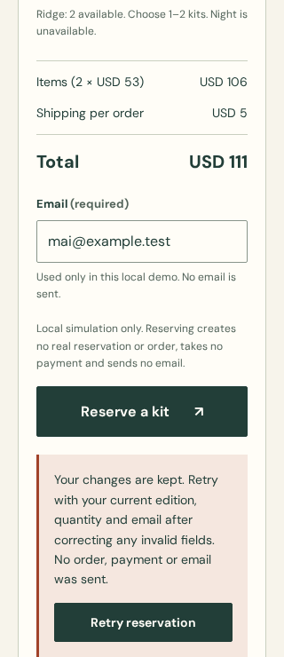

Invalid selection, retained quantity

Natural viewport after invalid submission; lower error content extends beyond the captured frame.
TasteForge / bounded maintenance follow-up
One native Codex standalone-skill invocation refined a separate copy of the Field Fold fixture. The frozen comparison and initial reviews remain unchanged. This is integration/regression evidence, not a fresh efficacy comparison.
Evidence and limits · Host result · Independent release review
Open original UI · Open corrected UI · Before/after invalid-stock probe
The original correctly blocks Ridge ×3 but displays USD164. The correction retains the quantity and suppresses the ordinary payable total, puts cost before email, associates validation feedback and retains explicit retry after failure edits.

Natural viewport after invalid submission; lower error content extends beyond the captured frame.

Natural viewport after editing the failed selection; no scroll reset for capture.
51 assertions and19 state captures passed at320/390/1440px plus reduced-motion entry. Six price-probe observations reproduce three original invalid-total findings and verify three corrected outcomes. Raw browser report.
Passing these checks does not establish full accessibility, comprehension or human usability. Human/manual tests remain deferred. Wider host support and complete accepted-cycle cost remain unassessed.